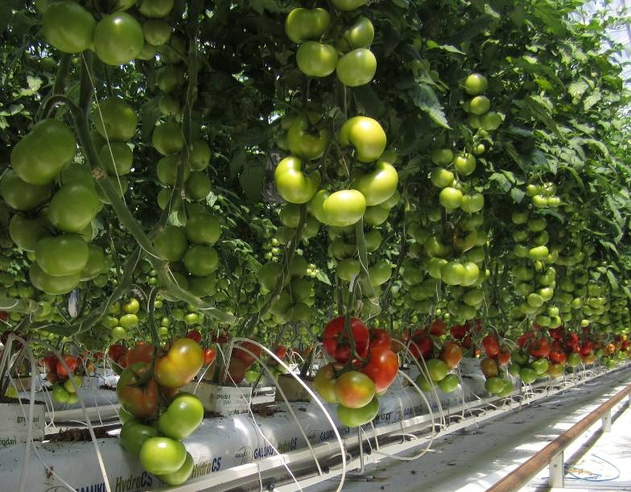

Soarele în citate, maxime, aforisme - diane.ro
 Despre diane.ro Contact & Publicitate
Despre diane.ro Contact & Publicitate
Home Horoscop, astrologie Vise Simboluri Superstiții Dragoste Psihologie Povești Sănătate Utile skip to main | skip to sidebar Acasă Soarele în citate, maxime, aforisme
Soarele în citate, maxime, aforisme
Diana Popescu aforisme , aforisme soare , citate , citate soare , cuvinte , maxime , maxime soare , proverbe , soare , statusuri , texte Am adunat aici cele mai frumoase citate despre soare, cele mai sugestive, inspiratoare şi mai înţelepte maxime, aforisme şi cugetări (statusuri) despre soare pe care le-am aflat, tradus şi cules cu o mare grijă, special pentru voi. Dacă am omis nişte zicale, proverbe ori texte semnificative despre soare, nu ezitaţi să mi le spune-ţi."Trei lucruri nu pot fi ascunse prea mult timp: soarele, luna şi adevărul."
Buddha
"Pot să fac orice atunci când soarele străluceşte deasupra mea: nici un munte nu este prea înalt pentru mine, nici un necaz prea dificil pentru a-l depăşi."
Wilma Rudolph
"Soarele este cu totul altul/nou în fiecare zi."
Heraclit
"Soarele, cu toate planetele învârtindu-se în jurul său şi depinzând de el, poate totuşi să coacă un ciorchine de struguri, ca şi cum nu ar avea nimic altceva de făcut în univers."
Galileo Galilei
"Dacă vrei să străluceşti ca un soare, mai întâi trebuie să arzi ca un soare."
A.P.J. Abdul Kalam
"Ţine-ţi faţa în lumina soarelui şi nu vei zări nici o umbră."
Helen Keller
"Soarele este cel mai important lucru din viaţa oricui, indiferent dacă eşti plantă, animal sau peşte, şi îl vedem ca a ne fi dăruit de-a gata."
Danny Boyle
"Dacă vrei să vezi razele soarelui, trebuie să alungi furtuna."
Frank Lane
"Niţel soare este bun pentru suflet, însă nu uit niciodată să port o pălărie cu boruri largi într-o zi însorită."
Miranda Kerr
"Faptul că soarele nu va răsări mâine nu este o afirmaţie mai puţin inteligibilă şi nu implică mai multe contradicţii decât afirmaţia că va răsări."
David Hume
"Soarele se poate stinge atunci când nimeni nu mai iubeşte."
Victor Hugo
"Fiecare zi este una potrivită să te bucuri de viaţă, indiferent dacă soarele străluceşte sau nu."
Marty Robbins
"În lumina solară există o energie musculară, fizică, corespunzând energiei spirituale a vântului."
Annie Dillard
"Lucrul cel mai îngrozitor legat de lumina soarelui este că scoate la iveală mizeria."
Brigid Berlin
Ïntoarce-ţi faţa către soare, şi umbrele vor cade în spatele tău."
Proverb maur
"Râsul este soarele care alungă iarna de pe faţa omului."
Victor Hugo
Când soarele sclipeşte, face mai mult decât să dea strălucire zilei; el ne iluminează sufletul, curăţând mohoreala adusă de întunericul nopţii."
Tista Ray
"Astronomia ne învaţă folosirea corectă a soarelui şi stelelor."
Stephen Leacock
"Soarele poate fi cea mai mare durere a ta, sau cea mai mare alinare a ta, în funcţie de felul cum îi vezi strălucirea."
Anthony Liccione
"Până şi soarele ne face să ne întoarcem privirea de la el şi de la viaţa iluminată de el."
Eberhard Arnold
"Chiar dacă soarele s-a dus, mi-a rămas lumina."
Kurt Cobain
"Cea mai întunecată oră este cea dinaintea răsăritului soarelui."
Paulo Coehlo
O ghicitoare românească despre soare: "Bulbuleţ de aur/ Joacă pe piei de taur."
"Strălucirea solară este îmbrăţişarea naturii şi respiraţia spiritului către pământ."
Terri Guillemets
"Este o suprafaţă strălucitoare în acea lumină solară. Orizontul pare să-ţi fie foarte aproape întrucât curbura lui este cu mult mai proeminentă decât pe pământ. Este incitant să fii pe acest loc. Îl recomand şi altora."
Neil Armstrong
"Dacă este lăsat să ardă, în orice om străluceşte un soare."
Socrate
"Cine poate să amăgească soarele?"
Ovidiu
"Dă-te puţin mai deoparte dintre mine şi soare."
Diogene
"Lumina soarelui este precum respiraţia vieţi către splendoarea toamnei."
Nathaniel Hawthorne
"Soarele nu este nimic altceva decât steaua dimineţii."
Henry David Thoreau
"Cu toate are un singur ochi, soarele îmbrăţişează cu privirea intreaga lume."
William Shakespeare
"Nu trebui să ne fie teamă de lumina zilei doar pentru că aproape întotdeauna scoate în evidenţă o lume mizerabilă."
Rene Magritte
"Umbrele nu au cum să se zărească pe ele însele în oglinda soarelui."
Evita Peron
Primăvara în citate, aforisme, maxime
"Lumina solară relevă culoarea; lumina artificială o disipează."
Helena Rubinstein
"Unii pictori preschimbă soarele într-o pată galbenă, alţii schimbă o pată galbenă în soare."
Pablo Picasso
"Chiar şi murdăria luceşte atunci când soarele binevoieşte s-o lumineze."
Johann Wolfgang Von Goethe
"Până la urmă, orice ar fi, soarele se află în mijlocul a tot ce există."
Copernic
"Soarele de fiecare zi crează un deşert."
Proverb arăbesc
"Departe de aici, în lumina soarelui, se află cele mai înalte aspiraţii ale mele. Nu le pot atinge, dar le pot contempla şi le pot desluşi frumuseţea, pot crede în ele şi pot încerca să le urmez."
Louisa May Alcott
"Urmând lumina soarelui, am părăsit Lumea Veche."
Cristofor Columb
"Pentru ca lumina soarelui să aibă o mare strălucire este nevoie să fie prezent şi întunericul."
Şir Francis Bacon
"Multe din umbrele acestei vieţi sunt provocate de faptul că stăm în calea soarelui."
Henry Ward Beecher
"Când răsare soarele se deşteaptă conştiinţa universului."
Victor Hugo
"Lumina soarelui este delicioasă, ploaia este împrospătătoare, zăpada este stimulatoare; nu există cu adevărat vreme rea, ci numai diferite feluri de vreme bună."
John Ruskin
"Nu lăsa ca umbrele lui ieri să întineze lumina soarelui de mâine. Trăieşti astăzi."
Nadina Morris
"Oriunde mergi, indiferent cum este vremea, poartă cu tine propriul soare."
Anthony J. D'Angelo
"Oferă-i astăzi unui străin unul din zâmbetele tale. POate fi singura rază de soare de care să aibă parte intreaga zi."
H. Jackson Brown, jr.
„Poţi închide ochii, dar nu poţi stinge soarele."
Nicolae Iorga
"Cei care aduc lumina soarelui în vieţile altora, nu pot să o ţină numai pentru ei."
James Matthew Barrie
"Dacă-ţi petreci toată viaţa aşteptând furtună, nu te vei bucura niciodată de soare."
Morris West
"Zâmbetele sunt pentru omenire ceea ce este lumina soarelui pentru flori."
Joseph Addison
"Este treaba artistului să creeze lumina atunci când soarele nu reuşeşte să o facă."
Romain Rolland
"Un râs sănătos este precum soarele ivit într-o casă."
William Makepeace Thackeray
"Asemeni soarelui, schimbarea poate fi un prieten ori un duşman, o binecuvântare sau un blestem, un răsărit ori un apus."
William Arthur Ward
"Dacă soarele ar refuza lumii lumina, ultima zi de strălucire ar asemui-o rânjetului unui idiot."
Emil Cioran
"O floare nu poate înflori fără soare, iar omul nu poate trăi fără dragoste."
Friedrich Max Muller
"Pentru a ne bucura de lumina soarelui, trebuie să părăsim răcoarea umbrei."
Samuel Johnson
"Soarele nu poate opări zăpada, şi nici timpul nu poate anula ceea ce ştiu poeţii."
Ralph Waldo Emerson
"În caz că liliacul nu îşi doreşte prietenia cu soarele, asta nu micşorează strălucirea soarelui."
Saadi
"Îţi mai aduci aminte ziua când ai luat soarele şi mi l-ai pus în suflet?"
Lucian Blaga
"Dragostea alină asemeni ploii după soare."
William Shakespeare
"Pericolul oglindeşte ardoarea soarelui în ochii omului curajos."
Euripide
"Bunătatea este soarele în care creşte virtutea."
Robert Green Ingersoll
"După ce apune soarele, orice licurici crede că el e locţiitorul."
Lucian Blaga
"Pentru a preţui strălucirea soarelui trebuie să ieşi afară şi să te avânţi către cer; în caz contrar, nu eşti decât o şopârlă stând nemişcată sub razele soarelui."
Ken Kesey
"Când îţi afli un soare, toată lumea te bagă în seama."
Dostoievski
“Nimic nu-i nou sub soare şi când crezi că ai descoperit o noutate, bagi de seamă că a spus-o altul înainte.”
George Călinescu
"Prietenii falşi sunt aidoma umbrei noastre, ţinându-se aproape de noi când mergem prin soare, dar părăsindu-ne în clipa în care păşim în întuneric."
John Christian Bovee
"Credinţa este virtutea furtunii, aşa cum fericirea este virtutea soarelui."
Ruth Fulton Benedict
"Din ce în ce mai puţin soare şi din ce în ce mai multă amintire a soarelui..."
Octavian Paler
Vara în citate, aforisme, maxime Soarele în citate, maxime, aforisme Reviewed by Diana Popescu on mai 06, 2017 Rating: 5 Share This: Facebook Twitter Google+ Pinterest Linkedin texte
Niciun comentariu:
Abonați-vă la: Postare comentarii ( Atom )
Cauta in Blogul Dianei
Postari populare pe diane.ro
De vorbă cu diavolul: Poveste cu tâlc de Paulo Coehlo Lampa lui Diogene: Simbol și semnificație Legenda scheletului din dulap Horoscop septembrie 2020: Toate zodiile 24 septembrie Sarbatori, traditii si obiceiuri religioase Nascut pe 24 septembrie Horoscop general | Profil astrologicAbonați-vă la diane.ro
Postări Atom Postări Comentarii Atom ComentariiArhiva blog
Arhiva blog septembrie (66) august (90) iulie (86) iunie (85) mai (91) aprilie (61) martie (64) februarie (42) ianuarie (38) decembrie (33) noiembrie (27) octombrie (27) septembrie (27) august (25) iulie (25) iunie (25) mai (32) aprilie (24) martie (29) februarie (27) ianuarie (28) decembrie (27) noiembrie (29) octombrie (25) septembrie (25) august (27) iulie (27) iunie (27) mai (30) aprilie (30) martie (35) februarie (36) ianuarie (28) decembrie (56) noiembrie (44) octombrie (48) septembrie (34) august (25) iulie (31) iunie (33) mai (33) aprilie (35) martie (53) februarie (38) ianuarie (44) decembrie (44) noiembrie (44) octombrie (33) septembrie (38) august (56) iulie (50) iunie (46) mai (42) aprilie (49) martie (65) februarie (57) ianuarie (45) decembrie (37) noiembrie (65) octombrie (40) septembrie (36) august (43) iulie (43) iunie (44) mai (40) aprilie (46) martie (50) februarie (44) ianuarie (45) decembrie (48) noiembrie (44) octombrie (39) septembrie (42) august (22) iulie (50) iunie (53) mai (52) aprilie (51) martie (54) februarie (59) ianuarie (66) decembrie (68) noiembrie (52) octombrie (85) septembrie (63) august (76) iulie (62) iunie (60) mai (76) aprilie (55) martie (22) februarie (35) ianuarie (69) decembrie (75) noiembrie (57) octombrie (77) septembrie (61) august (60) iulie (80) iunie (73) mai (71) aprilie (60) martie (72) februarie (63) ianuarie (75) decembrie (76) noiembrie (78) octombrie (78) septembrie (75) august (73) iulie (73) iunie (75) mai (46) aprilie (63) martie (77) februarie (69) ianuarie (69) decembrie (80) noiembrie (48) octombrie (50) septembrie (58) august (58) iulie (53) iunie (43) mai (47) aprilie (31) martie (29) februarie (20) ianuarie (32) decembrie (29) noiembrie (15) octombrie (12) septembrie (20) august (21) iulie (17) iunie (18) mai (32) aprilie (42) martie (12) februarie (25) ianuarie (31) decembrie (24) noiembrie (30) octombrie (33) septembrie (38) august (11) iulie (12) iunie (2)T5
Copyright © diane.ro Un produs Blogger .